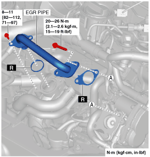

EGR PIPE REMOVAL/INSTALLATION [SKYACTIV-D 1.5]
id0116q2810000
1. Remove the engine cover. (See ENGINE COVER REMOVAL/INSTALLATION [SKYACTIV-D 1.5].)
2. Remove the EGR pipe.

3. Install in the reverse order of removal.